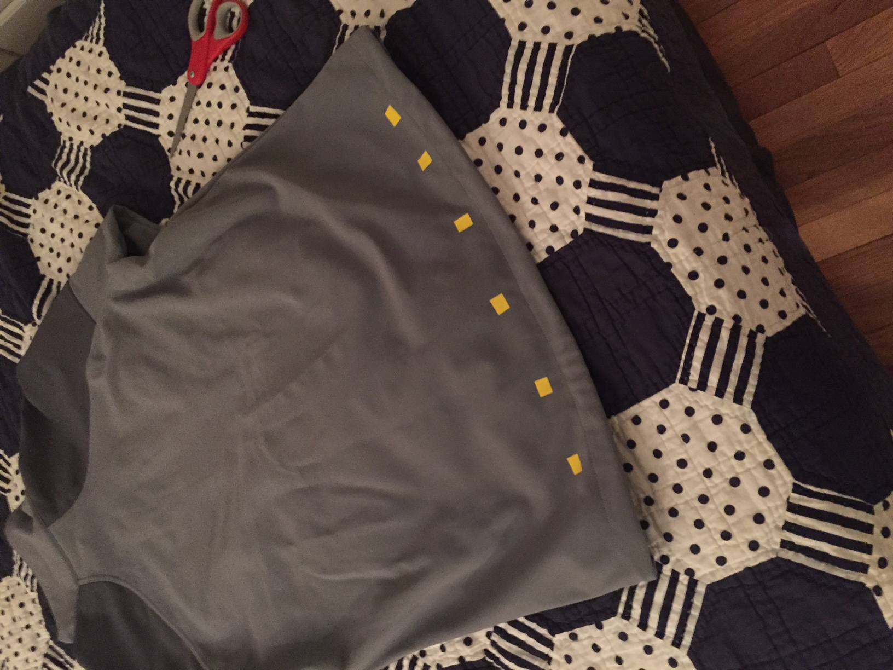
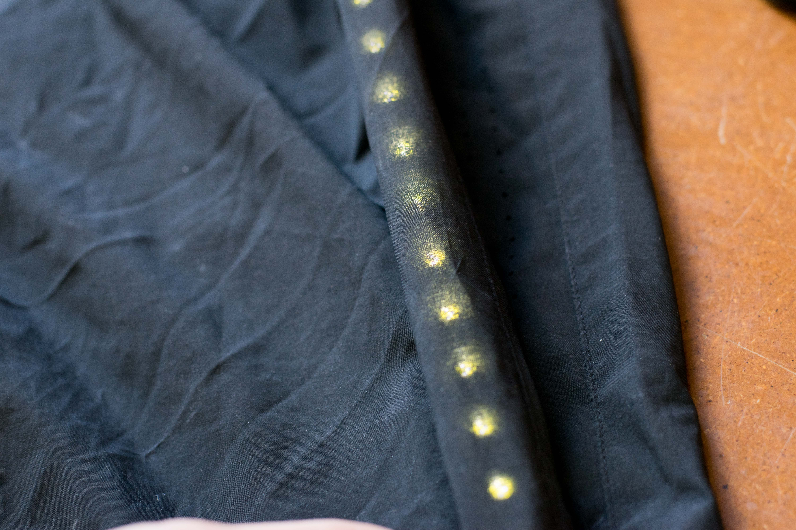

This week I explored iterations of various wearable clothing or other items, and brainstormed how they would function in the context of creating a urban navigation system.
The different ideas modeled were:
Jacket (windbreaker)
Jacket (zip-up)
Scarf
Bookbag
Messenger Bag
Peacoat
Water Bottle
Belt
Glove
Winter Hat/Beanie
Shorts
Umbrella
Sneakers
Other Ideas Considered:
Tie (not remotely practical)
Cuff Links (too difficult to engineer because too small)
Necklace (too difficult to engineer because too small)
Ring (too difficult to engineer because too small)
Watch (way too saturated market, and device too small to emit light)
Ankle Bracelet/Bracelet (didn’t have time to test/model)
Jacket Windbreaker
Jacket Front
Jacket Back
Pros:
People will need to wear jackets even if they don’t care about lighting/navigation.
Adding it is just an extra feature.
Relatively easy to engineer due to larger size, so one doesn’t have to mess with parts that are too small.
If you’re on a bike, you can still see the jacket you are wearing, particularly on your sleeves.
Light’s here can relay information.
The large size means you have the option to place LEDs everywhere and have high
brightness, which increases safety.
The large size means there’s potential for solar panels.
Naturally integrates well with biking, since windbreakers are particularly popular.
Easy to find a place for users to control device (inside pockets, on the outer
surface of coat with capacity touch etc.)
Able to utilize gesture controls/other signalling through sleeves.
Cons:
You have to wash it, which is difficult given the electronics (more of an engineering
problem, and this can be overcome).
This would not be the cheapest option for people in dire need of safety lights,
since you also have to pay for the material to make the jacket itself.
I lose control over the production of the clothing itself; this would have to be an augmentation project.
Jacket (Zip up)
Jacket Front View

Jacket Back View
This has similar pros/cons to the windbreaker jacket. I attempted to try it in a different material.
Scarf
Scarf with LED layout
Pros:
Small, and thus cheaper to produce.
I can control the entire fabrication process of the scarf.
Cons:
Less flexible with seasons/weather. People don’t wear scarves as often as other types of clothing.
Difficulty controlling the device while on a bike.
Less space to embed electronics.
Lighting does not seem to be a natural output device to put on a scarf. Placement is difficult, lighting may be distracting if it is strong since it’s so close to the users face.
Embedding anything in a scarf may make it particularly uncomfortable, since the scarf touches a particularly sensitive part of the body (neck).
Backpack
Backpack BackBackpack Front
Pros:
People carry around bookbags all the time anyways.
Easy to embed electronics or other devices.
Comfortability isn’t factor except on the back and straps, so there is less of a need for flexible pcbs etc. or other difficult engineering parts.
Some information can be relayed from the front, through the straps.
The large size means you have the option to place LEDs everywhere and have high brightness, which increases safety.
Easy to find a place for users to control device (inside pockets, on the outer surface of coat with capacity touch etc.)
Cons:
The backpack straps only carry limited information/lighting to the front side of carrier.
I lose control over the production of the clothing itself; this would have to be an augmentation project.
This would not be the cheapest option for people in dire need of safety lights, since you also have to pay for the material to make the jacket itself.
Difficult to communicate with backpack during a bike ride.
Difficult (and uncommon) to carry a backpack while running.
Messenger Bag
Bag FrontFront Perspective of User
(All pros/cons similar to backpack except: )
Pros:
Slightly easier than a normal backpack to engage user, since one has easier access to it’s front.
Cons:
Will only light up one side of the user.
There is only one strap to convey signaling/lighting to the front of the user.
Peacoat
Peacoat Front with LED on Buttons
Pros:
Able to integrate electronics into the front buttons, which is an elegant solution.
Relatively easy to engineer due to larger size, so one doesn’t have to mess with parts that are too small.
More able to preserve comfort, since electronics are embedded in a thicker material.
Easy to find a place for users to control device (inside pockets, on the outer surface of coat with capacity touch etc.)
Able to utilize gesture controls/other signalling through sleeves.
Cons:
Difficult to integrate lights onto the back of the coat. If lights are too tacky, it ruins the formality of the peacoat, which in essence ruins the piece of clothing itself.
No one runs with a peacoat.
Bike commuting with a peacoat is less common.
You have to wash it, which is difficult given the electronics (more of an engineering problem, and this can be overcome).
This would not be the cheapest option for people in dire need of safety lights, since you also have to pay for the material to make the jacket itself. Peacoats can be particularly expensive.
I lose control over the production of the clothing itself; this would have to be an augmentation project.
Water Bottle
Waterbottle as a lantern
Pros:
The device is small, but implementation of embedding electronics is relatively easy.
One can use the entire object as a large lantern.
Seems to lend itself to IoT usages.
I would have full control over the fabrication process.
Cheap to produce.
Cons:
Not straightforward how one uses this as safety lighting. When you walk you can carry it around like a lantern, but can’t be used while running or biking (unless it’s attached to a part of a bike).
You look silly in modern society carrying around a lantern.
Belt
Belt with LED Layout
Pros:
Cheap to produce…maybe?
Cons:
A lot of people wear their shirt over their belt, which can block lighting.
Not everyone chooses to wear a belt, particularly if they are biking or running.
Implementation is difficult because the device is so small, and there is a need to keep the belt thin, in order to fit through the pants.
I would likely not have control over fabrication.
Difficult to interact with or look at when you are biking.
Potential to look really tacky.
Gloves
Gloves with LED Layout
Pros:
Can easily provide signaling to user during bike rides,
and can be used in conjunction with gesture controls.
Cheap to produce.
Commonly used in many contexts (biking gloves etc.)
Cons:
Very difficult to engineer if you want a small size.
Does not work well as a safety light since there
isn’t much surface area to light up.
Winter Hat/Beanie
Hat with LED Layout
Pros:
Cheap to produce…maybe?
360 degrees of lighting is possible, so good for safety.
Cons:
Conflicts with bike helmets.
No way for user to see what the lights are signaling, or easily interact with hat.
Potential to look really tacky out of context.
Difficult to keep comfortable if one embeds with a lot of electronics.
Shorts
Shorts with LED Layout

Materials interacting with LED
Pros:
Not much
Cons:
Difficult to run or move with electronics embedded.
No way for user to easily interact while running or biking.
Only good for certain seasons.
Umbrella
Umbrella top LED LayoutUmbrella Bottom LED Layout
Pros:
Serves a narrow, but very useful use case. Poor weather condition + night is a dangerous combination for poorly lit areas.
Cheap to produce.
Can interact with user easily.
Projects light 360 degrees, while not having lights interfere with user comfort.
Can be integrated with IoT technology.
Cons:
Implementation may be difficult to build small electronics.
Not useful for running or biking, but not necessarily a con.
Sneakers
View from TopSneakers with LEDs on side
Pros:
Might have use cases where the shoe can collect data on run speed etc.
Despite being small, it may be pretty easy to integrate electronics.
Cons:
Difficult for user to interact with.
Not great for safety lighting since the object is small.
Potential to look really tacky.
I would likely not have control over fabrication.
People usually wear different shoes for different purposes,so it may be difficult to make 1 pair that can be used for many different settings.
Electronics Test
This week I worked on trying to fabricate a capacitive touch device
using conductive thread.
10MOhm resistorsConductive thread woven into fabric